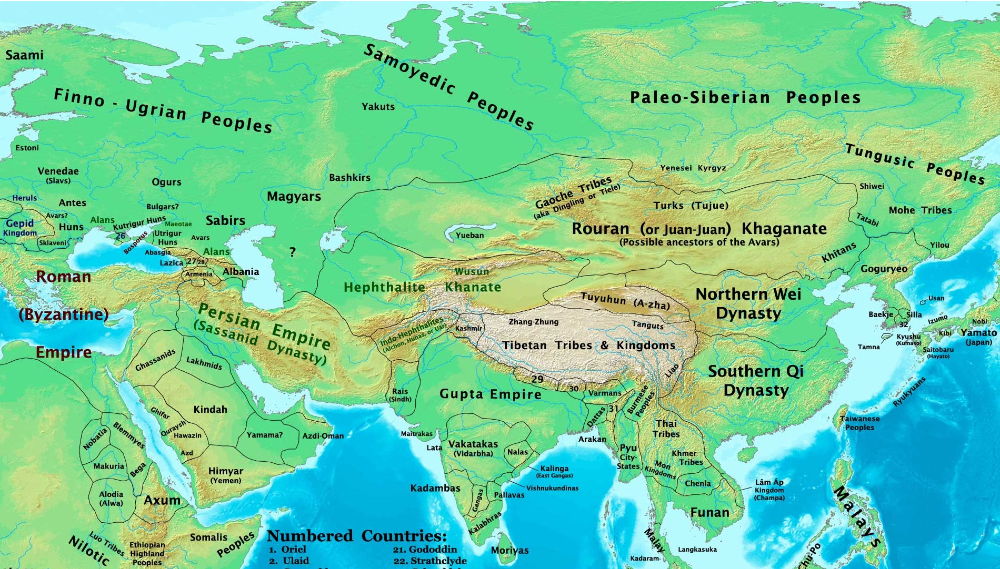
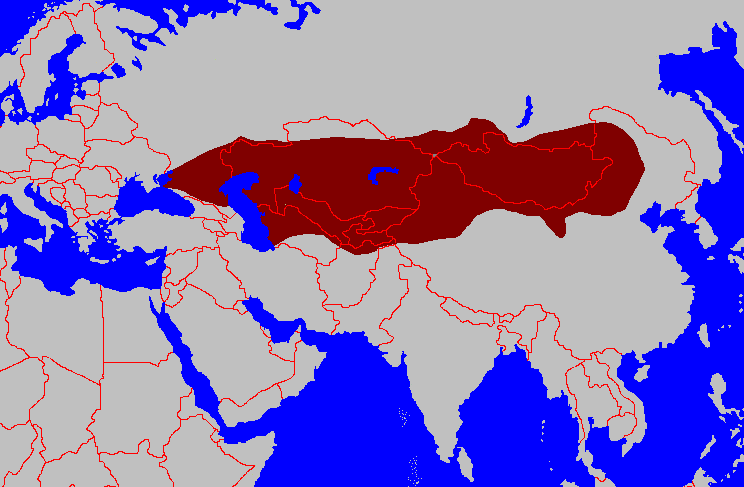

The First Khaganate
(552-581)
Central Asia in the Early 6th Century

Central Asia in 500 CE
Central Asia in the Medieval era was occupied by nomadic tribes, often relying heavily on horses to survive.
These tribes were generally indepentent, although occasionally they would band together under confederations, such as in the case of the Huns in the 5th and 6th centuries.
it was generally convention that upon the death of a Khan, the sons would divide up the empire between them so political unity rarely lasted beyond a generation.
Central Asia in 500 CE
The Ashina Tribe Revolts
The Rouran Khaganate was the confederation controlling a significant portion of northeast Asia during the early to mid 500s, composed of many tribes.
Bumin Qaghan, chieftan of the Ashina tribe, helped put down a rebellion against the ruling tribe and asked for a royal marriage to the Rouran Princess in thanks.
The Khan refused, and Bumin revolted himself. Bumin requested another royal marriage from the Western Wei of China, which was accepted.
This led to an alliance which allowed the Ashina tribe to take over rulership of the lands of the Rourans, and Bumin became the new Khan.
Bumin died only a few months after declaring himself Khan, and his son Issik took over but would die a year later. Bumin's second son, Muqan, took over and remained in power, continuing the fighting against the remaining Rourans. As they fled west, so did the Ashina under Muqan's uncle Istämi, who autonomously ruled the western part of the empire region in the name of Muqan.
Bumin died only a few months after declaring himself Khan, and his son Issik took over but would die a year later. Bumin's second son, Muqan, took over and remained in power, continuing the fighting against the remaining Rourans. As they fled west, so did the Ashina under Muqan's uncle Istämi, who autonomously ruled the western part of the empire region in the name of Muqan.
A Turkic Empire

Turkic Khaganate at it's height, c. 600CE
Over the course of the 560s, the Turkic Khaganate spead westward until they reached the Black Sea.
The eastern and western parts remained under the nominal rule of a single Khagan who ruled from the east, but the western half remained mostly de facto independent.
The Turkic Khaganate made an alliance with the Sassanid Empire then to jointly conquer the Hephthalites, a powerful empire ruling the area around Bactria.
These conquests left the Turks in control of a considerable portion of the Silk Road.
Turkic Khaganate at it's height, c. 600CE